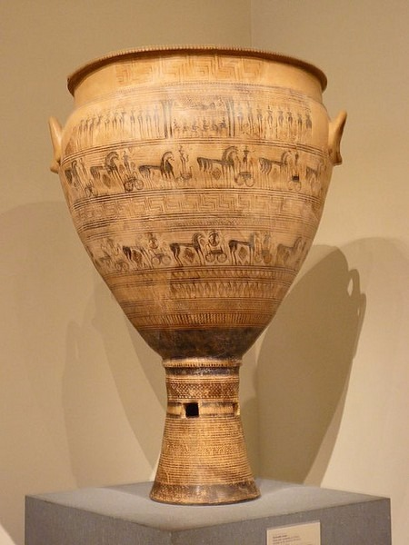
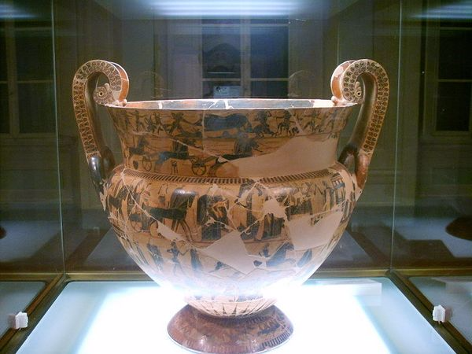
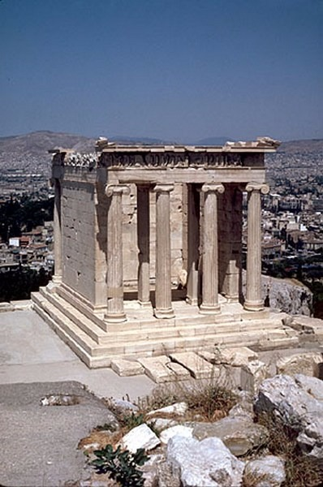
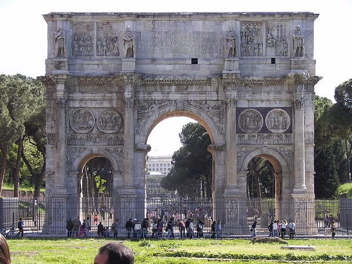
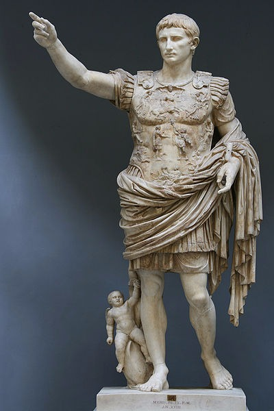
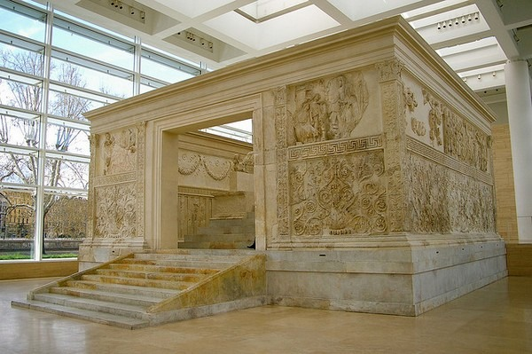
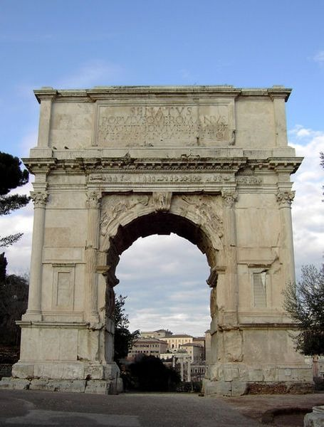

1
Based on its formal attributes and
what you learned in the course
about the stylistic developments of
ancient Greek art, when was the
vessel below produced?

Choose one answer.
| a. During the 8th century B.C. | ||
| b. During the 7th century B.C. | ||
| c. During the 6th century B.C. | ||
| d. During the 5th century B.C. | ||
| e. During the 4th century B.C. |
Question 2
The image below shows remains of
pediment sculptures from the temple
of Zeus at Olympia. Who is the
central figure?

Choose one answer.
| a. The king of all the Olympian gods | ||
| b. The deity who controls the sky | ||
| c. The deity who controls the sea | ||
| d. Both A and B | ||
| e. Both B and C |
Question 3
What is of special significance in
Greek art of the 7th century B.C.?
Choose one answer.
| a. Artistic conventions started breaking away from Near Eastern and Egyptian influence. | ||
| b. A more naturalistic style started emerging. | ||
| c. Animal hunts and composite beasts were some of the preferred subjects of pottery painting. | ||
| d. Both A and B | ||
| e. Both B and C |
Question 4
Which Greek architectural order
displays a simple capital on the
top of its columns and a frieze
divided into triglyphs and metopes?
Choose one answer.
| a. The Ionic order | ||
| b. The Corinthian order | ||
| c. The Doric order | ||
| d. The Composite order | ||
| e. The Tuscan order |
Question 5
Which of the following best
describes the artistic achievements
of the archaic period in Greece?
Choose one answer.
| a. Monumental sculpture emerged. | ||
| b. Architectural styles were established in temple architecture. | ||
| c. The Corinthian order replaced the Doric order as a preferred style of architecture. | ||
| d. Both A and B | ||
| e. Both A and C |
Question 6
Which of the following best
describes the Geometric period of
Greece?
Choose one answer.
| a. As trade with other Mediterranean locations increased and city-states developed, artistic activity was revived in the form of painted pottery and bronze statuettes. | ||
| b. The Geometric period witnessed the development of writing and Homer’s epic poems. | ||
| c. During the Geometric period in Greece, colonies were established. | ||
| d. All of the above | ||
| e. None of the above |
Question 7
Which of the following describes a
difference between a “Kouros” and a
“Korai”?
Choose one answer.
| a. The Kouros is always a male figure, while the Korai is always a female figure. | ||
| b. The Kouros is always nude, while the Korai is always clothed. | ||
| c. The Kouros is always the representation of a God, while the Korai is always the representation of a mortal. | ||
| d. Both A and B | ||
| e. Both B and C |
Question 8
Which of the following statements
accurately characterizes the period
surrounding the “Dark Age” of
Greece?
Choose one answer.
| a. The beginning of the “Dark Age” of prehistoric Greece coincides with the waning of the Mycenaean civilization. | ||
| b. Following the “Dark Age” of Greece, city-states started to emerge in the Peloponnese and in Attica. | ||
| c. Following the “Dark Age” of Greece, the Mycenaean civilization emerged stronger than it had been previously. | ||
| d. Both A and B | ||
| e. Both B and C |
Question 9
Which of the following statements
accurately characterizes Geometric
art?
Choose one answer.
| a. Geometric artifacts can take the form of bronze votive offerings. | ||
| b. Large-scale stone sculpture was developed. | ||
| c. Geometric painting tends to emphasize the roundness of the human body. | ||
| d. Both A and B | ||
| e. Both B and C |
Question 10
Which of the following statements
best describes black and red-figure
techniques of ancient Greek vase
painting?
Choose one answer.
| a. Red-figure techniques were used as early as the geometric period while black-figure techniques only started to be used in the archaic period. | ||
| b. In the black-figure technique, the background of the represented scene is left the color of the clay, while the figures are applied with a slip that turns black during firing. | ||
| c. In the black-figure technique, details of the figures are applied with a slip. | ||
| d. In the red-figure technique, details of the figures are achieved through incision. | ||
| e. All of the above |
Question 11
Which of the following statements
best describes Orientalizing
pottery?
Choose one answer.
| a. Orientalizing pottery painting tended to show less detail in the representation of human and animal figures than Geometric pottery painting did. | ||
| b. Orientalizing pottery showed the increased eastern influence in the 7th century B.C. | ||
| c. Orientalizing pottery painting displayed many floral motifs such as lotuses, palmettes, or rosettes. | ||
| d. Both A and B | ||
| e. Both B and C |
Question 12
Which of the following statements
best describes the Hellenistic age?
Choose one answer.
| a. Under Alexander the Great, Greek independent city-states thrived. | ||
| b. Alexander the Great’s rule inaugurated an era of peace and unification in the Mediterranean basin. | ||
| c. The spread of Hellenism under Alexander resulted in a hybrid and cosmopolitan culture. | ||
| d. Both A and B | ||
| e. Both B and C |
Question 13
Which of the following statements
best describes the “Kouros”?
Choose one answer.
| a. The Kouros is a type of monumental sculpture produced during the archaic period of ancient Greece. | ||
| b. The stylistic elements of the Kouros are in large part inherited from Egyptian statuary. | ||
| c. The Kouros is a representation of an ideal male figure in a contrapposto position. | ||
| d. Both A and B | ||
| e. Both B and C |
Question 14
Which of the following statements
correctly describes the vase
below?

Choose one answer.
| a. It is commonly referred to as the “Euphronios Calyx-Krater.” | ||
| b. It displays an increasing interest for narration. | ||
| c. The details of its represented figures were applied with slip. | ||
| d. Based on its monochromatic quality, it can be recognized as a Corinthian vessel. | ||
| e. Based on the color of the background, it can be recognized as a Corinthian vessel. |
Question 15
Which of the following statements
correctly represents ancient Greek
temple decoration?
Choose one answer.
| a. Temples and their sculptures were decorated in brightly colored paints. | ||
| b. Ancient Greek temples and their sculptures were often decorated with gold and silver objects. | ||
| c. Sculptures could fill friezes and pediments. | ||
| d. All of the above | ||
| e. None of the above |
Question 16
Which of the following statements
DOES NOT accurately describe
classical Athens?
Choose one answer.
| a. Classical Athens can be seen as the birthplace of democracy. | ||
| b. Greece’s failure to help defeat the Persians during the Persian wars put democracy on hold. | ||
| c. Athens became the head of the Delian League in a defensive effort against the Persians. | ||
| d. The Peloponnesian war put an end to Athens’ classical age. | ||
| e. None of the above |
Question 17
Which of the following statements
DOES NOT accurately describe the
Greek temple?
Choose one answer.
| a. Greek temples were often built on high ground. | ||
| b. A Greek temple usually stood on its own, at a large distance from any other building. | ||
| c. Greek temples were oblong in shape and had a peristyle running around them. | ||
| d. Both A and B | ||
| e. Both B and C |
Question 18
Which of the following statements
DOES NOT correctly associate a
vessel type with its intended
function?
Choose one answer.
| a. Amphoras were used to mix wine with water. | ||
| b. Kraters can often be linked to funerary traditions. | ||
| c. The panathanaic prize amphora contained oil for the victors of the Panathenaic games. | ||
| d. The Oinochoe was a pouring vessel. | ||
| e. Painted plates were often suspended and displayed. |
Question 19
Who was the sculpture made by
Phidias for the “cella” of the
Parthenon a representation of?
Choose one answer.
| a. A deity of war | ||
| b. Zeus’s daughter | ||
| c. A personification of wisdom and ingenuity | ||
| d. The patron goddess of Athens | ||
| e. All of the above |
Question 20
Which of the following statements
accurately characterizes “Classical
Antiquity?”
Choose one answer.
| a. Classical Antiquity generally refers to ancient Greece and Rome. | ||
| b. Ancient Romans adopted many ancient Greek traditions. | ||
| c. Ancient Romans frequently made marble copies of Greek sculptures. | ||
| d. Classical Antiquity proved to be foundational to Western art and culture. | ||
| e. All of the above |
Question 21
What elements of 4th century B.C.
Greek sculpture were introduced by
Praxiteles?
Choose one answer.
| a. The female nude | ||
| b. Slender proportions | ||
| c. “Contrapposto” | ||
| d. Both A and B | ||
| e. Both B and C |
Question 22
What is the name of the temple
below?

Choose one answer.
| a. The Temple of Zeus | ||
| b. The Erechtheum | ||
| c. The Temple of Athena Nike | ||
| d. The Parthenon | ||
| e. The Propylaia |
Question 23
What was the colossal statue of
Athena inside the Parthenon made
of?
Choose one answer.
| a. Bronze | ||
| b. Ivory | ||
| c. Gold | ||
| d. Both A and B | ||
| e. Both B and C |
Question 24
What were Athens and other Greek
city-states occupied with in the
first half of the 5th century B.C.?
Choose one answer.
| a. Maintaining its grip over the Aegean | ||
| b. Organizing the defensive Delian League | ||
| c. Entering into war with Persia | ||
| d. All of the above | ||
| e. None of the above |
Question 25
Where and how did the architects of
the Parthenon use optical
“refinements?”
Choose one answer.
| a. The columns of the peristyle tilted outwardly. | ||
| b. The column shafts swelled. | ||
| c. The floor of the temple was curved convexly. | ||
| d. All of the above | ||
| e. None of the above |
Question 26
Which of the following DOES NOT
constitute one of the ways in which
the Parthenon expressed and
asserted Athens’ dominance over the
Aegean?
Choose one answer.
| a. The statue of Athena Parthenos was probably nearly 40 feet tall. | ||
| b. Its large pediments presented larger-than-life sculpted figures expressing Athena’s power. | ||
| c. It was larger than any previous temple on the Greek mainland had been. | ||
| d. It was built completely out of marble. | ||
| e. All of the above |
Question 27
Which of the following statements
accurately characterizes the
“Charioteer of Delphi?”
Choose one answer.
| a. It is a marble sculpture. | ||
| b. The represented figure exuberantly communicates emotion tied to his victory. | ||
| c. It was created in the style of Phidias. | ||
| d. His hair and beard are represented in a very schematic fashion. | ||
| e. None of the above |
Question 28
Which of the following statements
accurately describes the Parthenon
and its design?
Choose one answer.
| a. The temple design combines the Doric and Ionic styles. | ||
| b. The temple is made of marble. | ||
| c. In the “cella”, visitors could walk all around the statue of Athena. | ||
| d. The temple had more columns in its colonnade than previous temples. | ||
| e. All of the above |
Question 29
Which of the following statements
accurately describes the sculptural
program of the Parthenon?
Choose one answer.
| a. It was created under the direction of the sculptor Phidias. | ||
| b. The frieze and pediments were decorated with gold statues. | ||
| c. The pediment sculptures depicted the Panathenaic processions. | ||
| d. The metope reliefs recounted the story of the struggle of Athena against Poseidon over Athens. | ||
| e. The sculptures on the pediments are examples of relief sculptures. |
Question 30
Which of the following statements
adequately characterizes Greek
red-figure pottery painting?
Choose one answer.
| a. Euphronios was one of the first painters to use this technique. | ||
| b. With the red-figure technique, painters always incised details such as facial features. | ||
| c. With the red-figure technique, it is harder to represent anatomy than with the black-figure technique. | ||
| d. Both A and B | ||
| e. Both B and C |
Question 31
Which of the following statements
best describes the difference
between Classical Greek sculpture
of the 5th century B.C. and
classical Greek sculpture of the
4th century B.C.?
Choose one answer.
| a. Generally speaking, there began to be less emphasis on individual features. | ||
| b. Generally speaking, there began to be more of an interest in the sensual rendering of the female nude. | ||
| c. Generally speaking, there began to be less emphasis on the rendering of emotion. | ||
| d. Both A and B | ||
| e. Both B and C |
Question 32
Which of the following statements
correctly describes a change of
emphasis from archaic Greek to
classical Greek sculpture?
Choose one answer.
| a. During the classical period, the human figure began to be represented more realistically. | ||
| b. During the classical period, artists began to apply principles of complementarity in the representation of the human body by rendering contrasts between rigid, working limbs and relaxed, at rest limbs. | ||
| c. The “sever style” can be seen as an early stage in the development of classical sculpture. | ||
| d. The new style of carving exemplified by Phidias was made possible by using clay models. | ||
| e. All of the above |
Question 33
Which of the following statements
is a mischaracterization of the
philosopher Aristotle?
Choose one answer.
| a. He lived and worked in the 4th century B.C. | ||
| b. He was a pupil of Plato. | ||
| c. His pioneering work and thought profited from a corpus of knowledge made accessible through Alexander’s conquests. | ||
| d. He was a pioneer in embryology, biology, and physiology. | ||
| e. He is most famous for his thoughts on metaphysics and the “world of essences.” |
Question 34
Which of the following statements
is false in regard to bronze and
the techniques used to make
statuary with it?
Choose one answer.
| a. Ancient Greeks realized that bronze had greater tensile strength than copper. | ||
| b. The technique of “sphyrelaton” was the preferred technique during the classical period of Greek art. | ||
| c. The lost-wax technique became the preferred technique of producing bronze statuary during the classical period of Greek art. | ||
| d. The lost-wax technique is a casting technique in which bronze replaces molten wax. | ||
| e. “Sphyrelaton” is a method that involves hammering sheets of metal. |
Question 35
Which of the following statements
is true about the Erechtheum?
Choose one answer.
| a. It is part of the complex on the Acropolis of Athens. | ||
| b. The Panathenic Procession ended in one of its “cellas.” | ||
| c. The Porch of the Caryatids features reclining nudes. | ||
| d. Both A and B | ||
| e. Both B and C |
Question 36
Which of the following statements
is true of the art of Classical
Greece?
Choose one answer.
| a. The Parthenon is an example of Classical Greek architecture. | ||
| b. The red-figure technique of vase painting was developed during the era of classical Greek art. | ||
| c. Bronze became the preferred medium for freestanding sculptures. | ||
| d. All of the above | ||
| e. None of the above |
Question 37
Which of the following statements
misrepresents Greek sculpture of
the 5th century B.C.?
Choose one answer.
| a. Freestanding statuary was frequently made of bronze. | ||
| b. There was usually a stong emphasis on individual features in freestanding statuary. | ||
| c. Sculptors, such as Phidias, suggested a new kind of vitality through the representation of the human figure. | ||
| d. Many sculptures expressed ideal proportions and harmony. | ||
| e. None of the above |
Question 38
Who came out victorious from the
Peloponnesian war at the beginning
of the 4th century B.C.?
Choose one answer.
| a. Athens | ||
| b. Messene | ||
| c. Sparta | ||
| d. Corinth | ||
| e. Knossos |
Question 39
Who was Perikles?
Choose one answer.
| a. A statesman who launched a building program for the Acropolis of Athens | ||
| b. The Architect of the Parthenon | ||
| c. The sculptor who created the statue of Athena for the Parthenon | ||
| d. A philosopher | ||
| e. None of the above |
Question 40
Who was the Berlin painter?
Choose one answer.
| a. A pottery painter who abandoned the use of superposed registers so that the vases themselves framed his figures | ||
| b. A black-figure vase painter | ||
| c. A vase painter who worked in the 6th century B.C. | ||
| d. Both A and B | ||
| e. Both B and C |
Question 41
The end of which of the following
wars inaugurated the era of 5th
century classical art in Greece?
Choose one answer.
| a. The Trojan War | ||
| b. The Peloponnesian War | ||
| c. The Persian Wars | ||
| d. The Punic Wars | ||
| e. None of the above |
Question 42
According to Rachel Mairs, which of
the following statements is
accurate?
Choose one answer.
| a. At Ai Khanoum, there was flexibility in religious practice in Hellenistic times. | ||
| b. Some artifacts from the Temple of the Indented Niches at Ai Khanoum display recognizably Persian traits. | ||
| c. A contemporary local observer might not have recognized an indented niche as a Mesopotamian trait. | ||
| d. Asserting Greek identity in Ai Khanoum was only important in certain contexts. | ||
| e. All of the above |
Question 43
According to Rex Martienssen, which
of the following statements
correctly describes Hellenistic
architecture and urbanism as they
are exemplified in Delos?
Choose one answer.
| a. The example of Delos shows how Hellenistic houses conformed to a standard arrangement. | ||
| b. The Hellenistic city broke with the geometry that had been experimented with during previous centuries. | ||
| c. The contrast in between complex civic architectural programs and modest domestic architectural programs reflects the fact that Ancient Greeks’ world revolved around public life. | ||
| d. Both A and B | ||
| e. Both B and C |
Question 44
According to Rex Martienssen, which
of the following aspects of the
Hellenistic Greek lifestyle is
reflected in its domestic
architecture?
Choose one answer.
| a. Contact with the open air was important. | ||
| b. The preparation of a meal and its serving and enjoyment were not to be experienced as separate. | ||
| c. Though there was a focus on privacy, it was relaxed as compared with previous eras. | ||
| d. All of the above | ||
| e. None of the above |
Question 45
How was the art of jewelry affected
by the social-historical context of
the Hellenistic era?
Choose one answer.
| a. Economic prosperity resulted in a bigger demand for luxurious gold jewelry. | ||
| b. The desire for ostentation resulted in the creation of very intricately and complexly designed jewelry. | ||
| c. A lot of gold was circulated due to Alexander having seized Babylonian objects. | ||
| d. In the Persian fashion, bracelets were frequently worn in pairs. | ||
| e. All of the above |
Question 46
What were the effects of
Hellenistic imperialism on the art
of Cyprus?
Choose one answer.
| a. Portraiture, used in the representation of members of royalty, became the most prominent type of stone sculpture. | ||
| b. Stylistically, there was as strong Egyptian influence. | ||
| c. The rule of the Ptolemies was expressed through great uniformity in artistic style, with the Alexandrian style as its model. | ||
| d. Both A and B | ||
| e. Both B and C |
Question 47
Which of the following best
describes the Hellenistic
“Soldiers’ Tomb” of Alexandria?
Choose one answer.
| a. It was built to commemorate foreign mercenaries who fought for the Ptolemaic kingdom. | ||
| b. It mostly displays representations of gods. | ||
| c. It reverts back to more “archaic” techniques of painting. | ||
| d. It displays a restricted palette due to the use of strictly local pigments. | ||
| e. None of the above |
Question 48
Which of the following is a
Hellenistic innovation in the
domain of pottery?
Choose one answer.
| a. The red-figure technique | ||
| b. The white-ground technique | ||
| c. Mould-made relief | ||
| d. Both A and B | ||
| e. Both A and C |
Question 49
Which of the following is false in
regard to Hellenistic mosaics?
Choose one answer.
| a. Starting in the second century B.C., mosaics were a widespread medium in the interior decoration of wealthy homes in every part of the Hellenistic empire. | ||
| b. The increase in mosaic production can be seen as a result of economic prosperity. | ||
| c. The increase in mosaic production can be seen as a result of the desire to live lavishly and fashionably. | ||
| d. Starting in the second century B.C., tessellated mosaics became an exclusive medium of interior decoration used only in royal palaces. | ||
| e. All of the above |
Question 50
Which of the following is false in
regard to the “Temple with indented
Niches” at Ai Khanoum?
Choose one answer.
| a. It had a typical Greek plan. | ||
| b. It had a cult statue in its “cella.” | ||
| c. Its niched decorations recall the art of Mesopotamia. | ||
| d. Both A and B | ||
| e. Both B and C |
Question 51
Which of the following is false in
regard to trends in Hellenistic
pottery?
Choose one answer.
| a. Hellenistic pottery seems to have sometimes emulated other media, such as metal vessels, “gold glass” bowls, or the sculpture and architecture of the period. | ||
| b. Generally speaking, the colors of polychrome pottery were usually more subdued than those of the older red-figure style. | ||
| c. Often, the new trends and techniques developed during the Hellenistic era can be said to have stemmed from the desire to imitate the opulent objects that were being created to decorate royal palaces. | ||
| d. All of the above | ||
| e. None of the above |
Question 52
Which of the following statements
accurately describes trends in
Hellenistic sculpture?
Choose one answer.
| a. With the construction of palaces and very ambitious architectural programs, sculptural decoration was important. | ||
| b. Many copies of Classical Greek masterworks were made during the Hellenistic period. | ||
| c. There was an interest in representing historical figures, such as philosophers of the past. | ||
| d. All of the above | ||
| e. None of the above |
Question 53
Which of the following statements
best describes Athens’ architecture
and planning during the Hellenistic
age?
Choose one answer.
| a. Athens adopted new Hellenistic trends while retaining its core and self. | ||
| b. Modernization of buildings in the Agora reflected the Hellenistic interest for functionality. | ||
| c. The arch started to be used in a more obvious and symbolic way. | ||
| d. All of the above | ||
| e. None of the above |
Question 54
Which of the following statements
best describes the shift from
Classical to Hellenistic as it
applies to sculpture?
Choose one answer.
| a. There was a shift from harmony and balance to “pathos” and emotion. | ||
| b. There was a shift toward more secularism in the representation of Greek gods. | ||
| c. There was a shift toward a more restricted range of subject-matter. | ||
| d. Both A and B | ||
| e. Both B and C |
Question 55
Which of the following statements
best describes the Hellenistic
interior treatment of houses in
Delos according to Rex Martienssen?
Choose one answer.
| a. Wall decoration was formally organized according to structural elements of architecture. | ||
| b. Interior walls displayed bright colors. | ||
| c. Within one room, only analogous colors were used. | ||
| d. Both A and B | ||
| e. Both B and C |
Question 56
Which of the following statements
describes an aspect of Hellenistic
art?
Choose one answer.
| a. The everyday and ordinary became worthy of being represented in art. | ||
| b. Individuality became a more prominent feature of figural representations. | ||
| c. Overall, Hellenistic art seems to remain fairly static. | ||
| d. Both A and B | ||
| e. Both B and C |
Question 57
Which of the following statements
describes the way Hellenistic
mosaics functioned within homes?
Choose one answer.
| a. Though many mosaic-related innovations took place in the Hellenistic period, it seems as though mosaics became less numerous within houses than they had been during the classical era. | ||
| b. Unlike classical mosaics, Hellenistic mosaics were mostly enjoyed privately, in spaces usually only used by their owner. | ||
| c. The materials used and the complexity of design implied either the mosaics’ lesser or greater significance. | ||
| d. Both A and B | ||
| e. Both B and C |
Question 58
Which of the following statements
DOES NOT accurately describe the
“Maison de la Colline” in Delos?
Choose one answer.
| a. Like most Hellenistic houses, it has only one floor. | ||
| b. The main rooms can be entered from a portico that spans the whole width of the house. | ||
| c. Most of the rooms had windows that faced the street. | ||
| d. Both A and B | ||
| e. All of the above |
Question 59
Which of the following statements
mischaracterizes Hellenistic Ai
Khanoum?
Choose one answer.
| a. Its Hellenistic name is “Alexandria on Oxus.” | ||
| b. It was founded over a previously Persian city and is located in present-day Afghanistan. | ||
| c. It was central to the empire. | ||
| d. Both A and B | ||
| e. Both B and C |
Question 60
Which of the following statements,
on the topic of Greek sculpture, is
true?
Choose one answer.
| a. While Hellenistic female figures of deities were much inspired by those of the classical era, they seem to draw less focus on the sensuality of their bodies than those of the classical era do. | ||
| b. While Hellenistic male figures were much inspired by those of the classical era, their faces and unbridled hair express more intensity. | ||
| c. In Hellenistic sculpture, large narrative groups are usually set in a frieze. | ||
| d. Both A and B | ||
| e. Both A and C |
Question 61
Which of the following is false in
regard to the Hellenistic period of
Greece?
Choose one answer.
| a. The Hellenistic period was a time of turmoil in Greece, when many traditional structures, such as the city-state, were shaken. | ||
| b. In Greece, there developed a trend, most famously with Epicureanism, to avoid politics and active participation in public life and to conquer fear of gods. | ||
| c. Alexander the Great established well-structured and stable administrations in the regions he conquered. | ||
| d. Alexandria became a great center of research, science, and commerce. | ||
| e. All of the above. |
Question 62
According to Francesca Tronchin,
which of the following is an
important aspect of Roman art?
Choose one answer.
| a. Its exclusively Greek-inspired style | ||
| b. Its focus on the depiction of specific individuals | ||
| c. Its focus on the depiction of specific historical events | ||
| d. Both A and B | ||
| e. Both B and C |
Question 63
Individuals of which age and gender
were most prominently represented
in Roman Republican portraiture?
Choose one answer.
| a. Young men | ||
| b. Elderly men | ||
| c. Young women | ||
| d. Elderly women | ||
| e. Children of both genders |
Question 64
The first style of Roman painting
did which of the following?
Choose one answer.
| a. Most significantly tried to emulate marble | ||
| b. Often divided walls into three parts | ||
| c. Was inspired by Hellenisitc painting | ||
| d. All of the above | ||
| e. None of the above |
Question 65
The people of which city-states
were involved in the Punic Wars 3rd
and 2nd century B.C.?
Choose one answer.
| a. Athens and Rome | ||
| b. Carthage and Rome | ||
| c. Athens and Sparta | ||
| d. Rome and Vulci | ||
| e. Rome and Tarquinii |
Question 66
The second style of Roman painting
did which of the following?
Choose one answer.
| a. Emerged with the Roman colonization of Pompeii | ||
| b. Rendered architectural forms | ||
| c. Lacked the use of shading or perspective | ||
| d. Both A and B | ||
| e. Both B and C |
Question 67
What are some common
characteristics of Etruscan
statuary?
Choose one answer.
| a. Etruscan sculpted figures often display more implied motion than Greek sculpted figures. | ||
| b. Terracotta is one of its common materials. | ||
| c. Figures are often depicted smiling. | ||
| d. All of the above | ||
| e. None of the above |
Question 68
What are some of the Greek-inspired
elements of the Roman Republican
Temple of Portunus?
Choose one answer.
| a. Columns with Ionic capitals | ||
| b. A raised podium | ||
| c. Stairs on only one side | ||
| d. Free-standing columns all around the temple | ||
| e. All of the above |
Question 69
Which approximate area of Italy did
the Etruscans dominate before they
were conquered by the Romans?
Choose one answer.
| a. Southern Italy | ||
| b. Central Italy | ||
| c. Eastern Coastal Italy | ||
| d. Both A and B | ||
| e. Both B and C |
Question 70
Which of the following accurately
characterizes Etruscan temples?
Choose one answer.
| a. They had wooden columns. | ||
| b. They usually had two chambers, each one dedicated to one of the two main Etruscan Gods. | ||
| c. They had stairs on all sides. | ||
| d. Both A and B | ||
| e. Both B and C |
Question 71
Which of the following accurately
describes an aspect of the
social-political structure that the
Roman Republic brought?
Choose one answer.
| a. There were no slaves. | ||
| b. The senate became a permanent part of the government. | ||
| c. Elected consuls replaced kings. | ||
| d. Both A and B | ||
| e. Both B and C |
Question 72
Which of the following is false of
Roman portrait busts of the
Republican period?
Choose one answer.
| a. They were often very realistic. | ||
| b. They were often associated with a funerary context. | ||
| c. They mostly emphasized the youth of the sitter. | ||
| d. Both A and B | ||
| e. Both B and C |
Question 73
Which of the following statements
accurately describes the difference
between Etruscan and Greek archaic
temples?
Choose one answer.
| a. Statuary decorated Etruscan temple friezes and pediments, while Greek temples displayed statuary on their roofs. | ||
| b. Unlike Greek temples, Etruscan temples displayed marble statuary. | ||
| c. Archaic Etruscan temples were made of wood, mud and brick, while archaic Greek temples were made of marble. | ||
| d. Unlike Etruscan temples, Greek temples sat on a large podium. | ||
| e. None of the above |
Question 74
Which of the following statements
accurately describes the “Porticus
Aemilia” in Rome?
Choose one answer.
| a. It was a warehouse in ancient Rome. | ||
| b. Its vaulted interior allowed lateral as well as axial movement on the inside. | ||
| c. Its construction was facilitated by the use of concrete. | ||
| d. It had barrel vaults. | ||
| e. All of the above |
Question 75
Which of the following statements
accurately describes the art of
portraiture during the Roman
Republic?
Choose one answer.
| a. Most portrait busts emphasized the youth of the sitter. | ||
| b. Idealization is usually associated with the Republican style of portraits. | ||
| c. Portraits of the Roman Republic were usually made for private use. | ||
| d. All of the above | ||
| e. None of the above |
Question 76
Which of the following statements
best describes the “Altar of
Domitius Ahenobarbus?”
Choose one answer.
| a. It is a sculpted relief, probably a statue base. | ||
| b. It depicts exclusively mythological scenes. | ||
| c. The side depicting the wedding of Neptune is less Greek in style than the other side. | ||
| d. The side depicting the wedding of Neptune is carved in very low relief. | ||
| e. None of the above |
Question 77
Which of the following statements
correctly describes Roman concrete?
Choose one answer.
| a. It began to be experimented with in the 2nd century A.D. | ||
| b. It is a composite of natural elements mixed with wax. | ||
| c. Its composition includes stone rubble, lime, and sand. | ||
| d. Concrete is cut and quarried. | ||
| e. The use of concrete results in exclusively rectilinear architecture. |
Question 78
Which of the following statements
DOES NOT accurately describe
Etruscan art?
Choose one answer.
| a. Though Etruscans were much inspired by Greek art, they did not use bronze as a sculptural media. | ||
| b. Sarcophagi often featured a reclining figure of the deceased on its lid. | ||
| c. Sarcophagi and tomb paintings can show wives and husbands together. | ||
| d. The Etruscans developed their counterpart to the Greek “Korai.” | ||
| e. Etruscan art, like Greek art, went through an orientalizing period in the 7th century B.C. |
Question 79
Who were the most powerful citizens
during the early Roman Republic?
Choose one answer.
| a. The Plebs | ||
| b. The Patricians | ||
| c. The Equites | ||
| d. The Slaves | ||
| e. None of the above |
Question 80
Whom is this a portrait of?

Choose one answer.
| a. Augustus | ||
| b. Julius Caesar | ||
| c. Plato | ||
| d. Alexander the Great | ||
| e. Pompey the Great |
Question 81
Which of the following is false
about the ancient Etruscan people?
Choose one answer.
| a. They were admirers of Greek painted vessels. | ||
| b. They had an alphabet adapted from Greek letters. | ||
| c. They achieved great engineering feats. | ||
| d. Their alphabet served as a basis for the Latin alphabet. | ||
| e. None of the above |
Question 82
How did Augustus advertise his
authority?
Choose one answer.
| a. As functioning within Rome’s framework of magistracies | ||
| b. As a combination of magistracies | ||
| c. As a dictatorship | ||
| d. Both A and B | ||
| e. Both B and C |
Question 83
In his “Ten Books of Architecture,”
how does Vitruvius describe the
symmetry of a building?
Choose one answer.
| a. As what could be called “strict bilateral symmetry” | ||
| b. As what could be called a “unified and balanced whole” | ||
| c. As similar to the harmony of the human body | ||
| d. Both A and B | ||
| e. Both B and C |
Question 84
In his “Ten Books of Architecture,”
Vitruvius does which of the
following?
Choose one answer.
| a. Makes a dedication to Augustus | ||
| b. Describes the good architect as being learned, among other things, in history, philosophy, music, and astronomy | ||
| c. Makes “order” an indispensable attribute of good architecture | ||
| d. Makes “economy” an indispensable attribute of good architecture | ||
| e. All of the above |
Question 85
What can be said of the houses at
Bulla Regia?
Choose one answer.
| a. Overall, they are not symmetrical in the Roman style. | ||
| b. Their sunken courts with mosaics can be considered African in style. | ||
| c. They were often used to display status and Greek culture. | ||
| d. Both A and B | ||
| e. Both B and C |
Question 86
What has fieldwork at Portus, the
main port of Rome in ancient times,
uncovered?
Choose one answer.
| a. The Trajanic harbor was hexagonal in shape. | ||
| b. Luxurious temples were built on the water front to impress visitors. | ||
| c. The cisterns were made with marble. | ||
| d. Both A and B | ||
| e. Both B and C |
Question 87
What is the monument below? How
does it fit into history and the
history of art?

Choose one answer.
| a. This monument is a triumphal arch dedicated to Constantine. | ||
| b. In its relief depicting the emperor distributing money, there is a stylistic evolution that can be considered transitional in between Roman and Medieval art. | ||
| c. Its reliefs of the emperor distributing money can be seen as signaling a 4th-century shift in the way an emperor represented himself in relation to his subjects. | ||
| d. All of the above | ||
| e. None of the above |
Question 88
Which of the following best
describes technology and
infrastructure used throughout the
Roman Empire?
Choose one answer.
| a. A network of roads was constructed for warfare purposes. | ||
| b. City streets featured sidewalks. | ||
| c. Water power was used to make flower. | ||
| d. Water was transported from hill tops via aqueducts. | ||
| e. All of the above |
Question 89
Which of the following best
describes the Colosseum?
Choose one answer.
| a. It is a Julio-Claudian amphitheater. | ||
| b. It has three stories of arches with Tuscan columns. | ||
| c. It was made possible by the use of molded concrete. | ||
| d. All of the above | ||
| e. None of the above |
Question 90
Which of the following best
describes The Pantheon?
Choose one answer.
| a. It was conceived as a temple to Venus Genitrix. | ||
| b. It used coffers to lighten its dome. | ||
| c. Its walls are 20 feet thick from top to bottom. | ||
| d. Both A and B | ||
| e. Both B and C |
Question 91
Which of the following best
summarizes why the “Ara Pacis”
reliefs are often used to
illustrate Roman style in the
visual arts?
Choose one answer.
| a. They are on an important monument made during a pivotal moment in Roman history and commissioned by the first Roman Emperor. | ||
| b. They illustrate the importance of ancestral lineage and how this lineage can be tied to mythological figures in Roman culture. | ||
| c. They illustrate the way in which Roman art absorbed Classical Greek art. | ||
| d. They illustrate the typical Roman characteristic that is a focus on actual events and people. | ||
| e. All of the above |
Question 92
Which of the following can be said
of Augustus’s building objectives?
Choose one answer.
| a. He wanted to transform Rome on the model of Athens. | ||
| b. At the time of his building projects, marble was available. | ||
| c. He wanted to transform Rome in the way Perikles had transformed Athens. | ||
| d. All of the above | ||
| e. None of the above |
Question 93
Which of the following correctly
describes the free-standing
sculpture below?

Choose one answer.
| a. It is a representation of the emperor Trajan. | ||
| b. The represented figure holds a spear, a symbol of imperial power. | ||
| c. The pose of the figure is reminiscent of a sixth century B.C. Greek Kouros. | ||
| d. There are no traces of individualization; the representation is purely archetypal. | ||
| e. This is a realistic depiction of a specific emperor; it shows what the emperor looked like at the time when the statue was made. |
Question 94
Which of the following DOES NOT
accurately describe Augustus’s
forum?
Choose one answer.
| a. In an effort to associate himself with Julius Caesar, Augustus had his forum built right next to Caesar’s. | ||
| b. Its plan follows the plan of Julius Caesar’s forum. | ||
| c. A temple to Jupiter was made the focus of the forum and was symbolic of Augustus’ avenge of Caesar. | ||
| d. He made specific references to Greek reliefs and sculptures of the Acropolis. | ||
| e. All of the above |
Question 95
Which of the following empires were
completely or partially absorbed by
the Roman Empire?
Choose one answer.
| a. The Greek Empire | ||
| b. The Carthaginian Empire | ||
| c. The Hellenistic Empire | ||
| d. All of the above | ||
| e. None of the above |
Question 96
Which of the following is an
accurate characterization of the
monument below?

Choose one answer.
| a. It was built in honor of the Emperor Trajan. | ||
| b. It was made of concrete. | ||
| c. An altar was located in its center. | ||
| d. It featured two staircases. | ||
| e. Its relief sculpture depicts exclusively depicts the emperor’s family. |
Question 97
Which of the following statements
adequately describes the city of
Thugga?
Choose one answer.
| a. Before becoming a Roman province, it was an urban center of the kingdom of Numibia. | ||
| b. Previous to Roman colonization, Thugga had been exposed to Hellenistic influence. | ||
| c. The plans of its temples of Saturn and Mercury are typically Roman. | ||
| d. Both A and B | ||
| e. Both B and C |
Question 98
Which of the following statements
DOES NOT accurately describe the
age of the “Five Good Emperors?
Choose one answer.
| a. Ambitious building programs were undertaken. | ||
| b. The gap between Romans and provincials narrowed, and this was reflected in sculpture. | ||
| c. Augustus was the first of the “Five Good Emperors.” | ||
| d. Both A and B | ||
| e. Both B and C |
Question 99
Which of the following statements
DOES NOT describe the monument
below?

Choose one answer.
| a. It was built to commemorate Titus and the sack of Jerusalem. | ||
| b. One of its reliefs shows the Roman army taking a menorah from the temple of Jerusalem. | ||
| c. Its relief sculptures are very schematic in style. | ||
| d. Both A and B | ||
| e. Both B and C |
Question 100
Which style did the Romans
particularly like to use in their
capitals?
Choose one answer.
| a. Doric | ||
| b. Ionic | ||
| c. Corinthian | ||
| d. Tuscan | ||
| e. Composite |
Question 101
Which of the following statements
mischaracterizes the dome shown
here?

Choose one answer.
| a. It is the dome of the Pantheon. | ||
| b. It is made of cut stone. | ||
| c. It made use of a mold. | ||
| d. All of the above | ||
| e. None of the above |